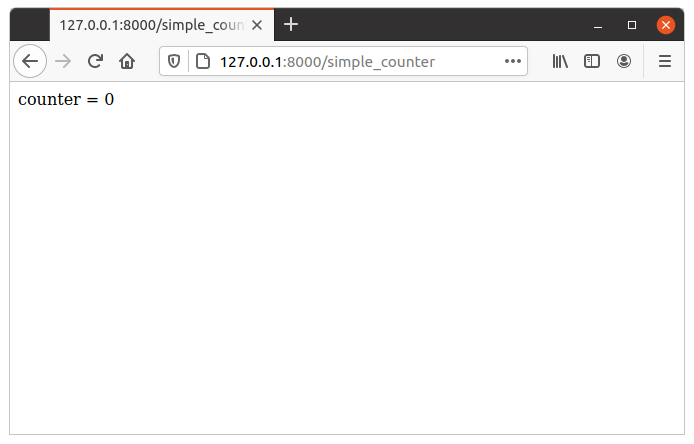

夹具（Fixture）
一个 夹具（Fixture） 被定义为 “固定在建筑物或车辆中的设备或用具”。在我们这里的情况下， 夹具（Fixture） 是附加到处理 HTTP 请求以产生响应的 action 的东西。
在处理任何 HTTP 请求的时候，有一些我们可能想要执行的可选操作。例如，解析 cookie 以查找 session 信息、提交数据库事务、从 HTTP 头部确定首选语言、获取合适的国际化操作，等等。这些操作都是可选的。有些 action 需要它们，有些 action 不需要。它们也可能相互依赖。例如，如果 session 存储在数据库中，我们的 action 又需要它，那么我们可能需要从 HTTP 头部解析 session cookie，从数据库连接池中获取一个连接，如果会话数据有变化 - 在 action 执行完毕后 - 再将 session 保存回数据库。
PY4WEB 的夹具（Fixtures）提供了一种机制，用于指定 action 额外需要什么，以便 py4web 可以以最有效的方式完成所需任务（并跳过不需要的任务）。夹具（Fixtures）使代码更高效，并减少了样板代码的需求。把夹具（Fixtures）想象成针对每个 action 的中间件（而不是针对整个应用）。
PY4WEB 的夹具（Fixtures）与 WSGI 中间件和 BottlePy 插件相似，除了它们应用于单个 action，而不是所有的 action，并且它们之间可以相互依赖。
PY4WEB 自带一些预定义的夹具（Fixtures）：session、url signing 和 flash messages ，将在本章中完整地解释。Database connections、 internationalization、authentication 和 templates 在这里只是简单地介绍，因为有专门的章节进行介绍。
开发者也可以自由地添加夹具，例如，处理第三方的模板语言或第三方的 session 逻辑；这将在 自定义夹具 的相关段落中解释。
使用 “夹具（Fixture）”
正如我们在上一章中看到的，夹具是装饰器 @action.uses(...) 的参数。 你可以在一个装饰器中指定多个夹具，也可以使用多个装饰器。
夹具也可以组合应用。例如：
preferred = action.uses(session, auth, T, flash)
然后，你可以一次性应用它们：
@action('index')
@preferred
def index():
return dict()
通常，你使用夹具的顺序并不重要，因为如果它们有明确的依赖关系， py4web 很清楚如何管理它们。例如，虽然 auth 明确地依赖于 db 和 session，但是你不需要全部列出它们。
但是，有一个重要的例外：模板夹具（Template fixture） 必须是 第一个 。否则，它将无法访问它应该需要的那些来自其他夹具的内容，特别是 Inject() 和 Flash()，我们稍后会看到。
模板夹具
PY4WEB 默认使用 YATL 模板语言，并为它提供了一个夹具。
from py4web import action
from py4web.core import Template
@action('index')
@action.uses(Template('index.html', delimiters='[[ ]]'))
def index():
return dict(message="Hello world")
注意：这个例子假设你已经基于 scaffolding 应用创建了应用程序，因此模板 index.html 已经为你创建好了。
Template 对象是一个夹具（Fixture）。它使用 index.html 模板文件将 action 返回的 dict() 转换为字符串。在后面的章节中，我们将提供一个例子，说明如何定义一个自定义的夹具来使用不同的模板语言，例如 Jinja2。
注意，由于模板的使用非常常见，并且很可能每个 action 都使用不同的模板，我们提供了一些便捷的语法，以下两行是等价的：
@action.uses('index.html')
@action.uses(Template('index.html', delimiters='[[ ]]'))
还要注意，py4web 模板文件被缓存在内存（ RAM ） 中。py4web 缓存对象在后续的 缓存和记忆 中进行了描述。
警告
如果你使用多个夹具 fixture，请始终将模板放在 第一个 。
例如：
@action.uses(session, db, 'index.html') # wrong @action.uses('index.html', session, db) # right
注意，如果你阅读过旧文档，那么你就清楚：在早期 py4web 地实验版本（直到2022年2月）中，这个需求是完全相反的！
正如我们在前面的段落中已经看到的，你可以在一个装饰器中组合很多夹具。你甚至可以根据需要传递不同的模板来扩展这个装饰器。例如：
def preferred(template, *optional):
return action.uses(template, session, auth, T, flash, *optional)
然后：
@action('index')
@preferred('index.html')
def index():
return dict()
这种语法没有性能影响：它只是为了避免在多个地方重复一个装饰器逻辑。这样，你会有更干净的代码，如果需要，你可以只在一个地方改变它。
注入夹具
注入夹具（ Inject fixture ）用于将变量（甚至 python 函数）传递给模板。这里有一个简单的例子：
from py4web.utils.factories import Inject
my_var = "Example variable to be passed to a Template"
...
@action.uses('index.html', Inject(my_var=my_var))
def index():
...
稍后，会在 YATL 章节中的 使用 注入 部分解释。
翻译夹具
这里是用法示例：
from py4web import action, Translator
import os
T_FOLDER = os.path.join(os.path.dirname(__file__), 'translations')
T = Translator(T_FOLDER)
@action('index')
@action.uses(T)
def index(): return str(T('Hello world'))
字符串 hello world 将基于指定的 “translations” 文件夹中与 HTTP accept-language 头最匹配的国际化文件进行翻译。
这里的 Translator 是一个 py4web 类，它扩展了 pluralize.Translator ， 并且也实现了 Fixture 的接口。
我们可以很容易地组合多个夹具。这里，作为一个例子，我们制作了一个 action ，它计算 “访问次数”。
from py4web import action, Session, Translator, DAL
from py4web.utils.dbstore import DBStore
import os
db = DAL('sqlite:memory')
session = Session(storage=DBStore(db))
T_FOLDER = os.path.join(os.path.dirname(__file__), 'translations')
T = Translator(T_FOLDER)
@action('index')
@action.uses(session, T)
def index():
counter = session.get('counter', -1)
counter += 1
session['counter'] = counter
return str(T("You have been here {n} times").format(n=counter))
如果 T 夹具在一个模板中要使用，你可能需要把它传递给那个模板：
@action('index')
@action.uses("index.html", session, T)
def index():
return dict(T=T)
或者，可以注入（效果同上）：
from py4web.utils.factories import Inject
@action('index')
@action.uses("index.html", session, Inject(T=T)
def index():
return dict()
现在，创建翻译文件 translations/en.json :
{"You have been here {n} times":
{
"0": "This your first time here",
"1": "You have been here once before",
"2": "You have been here twice before",
"3": "You have been here {n} times",
"6": "You have been here more than 5 times"
}
}
当使用英语作为浏览器语言偏好设置访问此网站并多次重新加载时，您将收到以下消息：
This your first time here
You have been here once before
You have been here twice before
You have been here 3 times
You have been here 4 times
You have been here 5 times
You have been here more than 5 times
现在尝试创建一个名为 translations/it.json 的文件，其中包含：
{"You have been here {n} times":
{
"0": "Non ti ho mai visto prima",
"1": "Ti ho gia' visto",
"2": "Ti ho gia' visto 2 volte",
"3": "Ti ho visto {n} volte",
"6": "Ti ho visto piu' di 5 volte"
}
}
将您的浏览器偏好设置为意大利语：现在消息将自动翻译为意大利语。
注意，在 Dashboard 中有一个用于创建、更新和更新翻译文件的用户界面，它能通过 Dashboard 上的 i18n+p11n 按钮访问的。

这就是你看到了如下页面：

在 https://github.com/web2py/pluralize 里面，可以找到更多详细内容。
如果您想强制 action 使用其他地方定义的语言，例如来自会话变量，您可以执行：
@action('index')
@action.uses("index.html", session, T)
def index():
T.select(session.get("lang", "it"))
return dict(T=T)
如果你想让所有的 action 都使用相同的预定义语言并且忽略浏览器偏好，你必须重新定义 T 实例的 select 方法：
T.on_request = lambda *_: T.local.__dict__.update(tag="it", language=T.languages["it"])
这是在任何 action 之外完成的，并且将适用于所有 action 。action 仍然需要声明 action.uses(T) ，否则预定义的行为仍被认为是未定义的。
消息夹具
通常，希望向用户显示 “警报” 。在这里，我们称它们为 flash 消息 。它不仅仅是向视图显示消息，因为 flash 消息还：
可以在重定向后保留状态
可以在服务器端和客户端生成
可以有一个类型
应该可以被关闭
Flash helper 在服务器端处理这些。下面是一个例子：
from py4web import Flash
flash = Flash()
@action('index')
@action.uses(flash)
def index():
flash.set("Hello World", _class="info", sanitize=True)
return dict()
并在模板中：
<flash-alerts class="padded" data-alert="[[=globals().get('flash','')]]"></flash-alerts>
通过设置 flash helper 中的消息值，action 返回一个 flash 变量，这会触发模板中的 JS 把消息注入到 py4web-flash DIV 中，你可以根据自己的需要来定位它。 可选 class 也应用于被注入的 HTML。
如果在 flash 被设置后进行页面重定向，flash 就会被记住。 这是通过要求浏览器暂时保存前面的 cookie 中的消息来实现的。 重定向后，浏览器将消息发送回服务器，服务器在返回内容之前自动设置它，除非它被另一个设置覆盖。
如果在控制器 action 函数内先调用一次 flash.set('something') 或返回 flash={'message': 'hello world', 'class': 'info'} 字典对象，那么在客户端也可以通过调用以下方法来设置/添加 flash 消息：
Q.flash({'message': 'hello world', 'class': 'info'});
py4web 默认使用一个名为 info 的 alert 类，大多数 CSS 框架为警报定义了名为 success , error , warning , default 和 info 的类。 但是，py4web 中没有对这些名称进行硬编码。 你可以使用你的自己的类名。
你可以在 examples 应用中看到 flash 消息的基本用法。
Session 夹具
简单地说，Session（会话）可以定义为一种保存信息的方式，这些信息希望在用户与网站或 Web 应用程序的整个交互过程中保持不变。换句话说，Session 使无状态的 HTTP 连接成为有状态的。
在 py4web 中，Session 对象也是一个夹具。下面是一个简单的示例，它用于实现计数器。
from py4web import Session, action
session = Session(secret='my secret key')
@action('index')
@action.uses(session)
def index():
counter = session.get('counter', -1)
counter += 1
session['counter'] = counter
return "counter = %i" % counter
计数器将从 0 开始；其值将被记住并每次重新加载页面时会增加 1。
在新的浏览器选项卡中打开页面将为您提供更新后的计数器值。关闭并重新打开浏览器，或打开新的 私有窗口 ，将从 0 重新启动计数器。
通常保存在会话对象中的信息与用户相关 ——— 比如它的用户名、偏好、最后访问的页面、购物车等等。会话对象具有与 Python 字典相同的接口，但在 py4web 中会话总是使用 JSON 存储（ 确切地说是 JWT ，即 JSON Web Token ），因此您应该只存储可支持 JSON 序列化的对象。如果对象不可序列化，它将使用 __str__ 运算符进行序列化，并且可能会丢失一些信息。
组成会话对象的信息可以被保存在：
客户端，只需使用 cookies（默认）
服务端，但您仍然需要极小的 cookies 来识别客户端
即使可以设置会话的过期时间，在默认情况下，py4web 会话永远也不会过期（除非它们包含登录信息，但那是另一回事）。还可以指定其他参数：
session = Session(secret='my secret key',
expiration=3600,
algorithm='HS256',
storage=None,
same_site='Lax',
name="{app_name}_sesson")
这里的：
secret是用于对信息进行签名的密码expiration是会话的最大生存期，以秒为单位（默认为 None，即永不超时）algorithm是用于 JWT 令牌签名的算法（默认为 ‘HS256’ ）storage是一个参数，允许指定一个替代的会话存储方法（例如 Redis 或数据库）。如果没有指定，将使用默认的 cookie 方法same_site是一个选项，用于防止 CSRF 攻击（跨站请求伪造），默认启用，使用 ‘Lax’ 选项模式。你可以在 这里 阅读更多关于它的信息name是用于会话 cookie 名称的格式。
如果没有提供 storage 的参数值，会话将存储在客户端的 jwt cookie 中。 否则，我们会有服务器端会话：jwt 被存储在 storage 中，并且只有它的 UUID 键被存储在 cookie 中。 这就是为什么服务器端会话不需要 secret 的原因。
服务端内存缓存中的会话
需要安装并配置内存缓存
import memcache, time
conn = memcache.Client(['127.0.0.1:11211'], debug=0)
session = Session(storage=conn)
服务端 Redis 中的会话
需要提前安装和配置 Redis 。
import redis
conn = redis.Redis(host='localhost', port=6379)
conn.set = lambda k, v, e, cs=conn.set, ct=conn.ttl: (cs(k, v), e and ct(e))
session = Session(storage=conn)
注意：存储对象必须有 get 和 set 方法， set 方法必须允许指定过期时间。redis 连接对象有一个 ttl 方法来指定过期时间，因此我们对 set 方法进行了动态修补（monkey patch）以获得预期的签名和功能。
服务端数据库中的会话
from py4web import Session, DAL
from py4web.utils.dbstore import DBStore
db = DAL('sqlite:memory')
session = Session(storage=DBStore(db))
警告
示例中使用的 'sqlite:memory' 数据库 在多进程环境中不能使用 ；这个怪异之处在于你的应用程序仍然可以工作，但它处于不确定和不安全的状态，因为每个进程/工作进程都会有其自己的独立的内存数据库。
这是一种情况：一个fixture（会话）需要另一个fixture（数据库）。这由 py4web 自动处理，以下几行是等效的：
@action.uses(session)
@action.uses(db, session)
服务端自由存储会话
你能够轻松地将会话存储在任何你想要的地方。你所要做的就是向 Session 对象提供一个 storage 对象，该对象具有 get 和 set 方法。例如，假设你想要将会话存储在你的本地文件系统上：
import os
import json
class FSStorage:
def __init__(self, folder):
self.folder = folder
def get(self, key):
filename = os.path.join(self.folder, key)
if os.path.exists(filename):
with open(filename) as fp:
return json.load(fp)
return None
def set(self, key, value, expiration=None):
filename = os.path.join(self.folder, key)
with open(filename, 'w') as fp:
json.dump(value, fp)
session = Session(storage=FSStorage('/tmp/sessions'))
我们将实现过期、使用子文件夹限制每个文件夹的文件数量和实现文件锁定留给你自己当作练习去实现。然而，我们不建议在文件系统上存储会话：它效率低下，而且不能很好地扩展。
Condition 夹具
有时您想根据给定条件限制对操作的访问。例如，要强制执行一个工作流程：
@action("step1")
@action.uses(session)
def step1():
session["step_completed"] = 1
button = A("next", _href=URL("step2"))
return locals()
@action("step2")
@action.uses(session, Condition(lambda: session.get("step_completed") == 1))
def step2():
session["step_completed"] = 2
button = A("next", _href=URL("step3"))
return locals()
@action("step3")
@action.uses(session, Condition(lambda: session.get("step_completed") == 2))
def step3():
session["step_completed"] = 3
button = A("next", _href=URL("index"))
return locals()
请注意，条件夹具将函数作为第一个参数，称为 on_request ，并且运行后必须为 True 或 False 。
另请注意，在上面的示例中，条件依赖于会话。因此，在 action.uses 中，Condition(...) 必须列在 session 之后。
如果为 False，则默认情况下，Condition 夹具会引发 404。 可以指定不同的异常：
Condition(cond, exception=HTTP(400))
还可以在引发异常之前调用其它函数，例如，重定向到另一个页面：
Condition(cond, on_false=lambda: redirect(URL('step1')))
您可以使用条件来检查权限。例如，如果您使用 Tags 向用户提供组成员资格（稍后将在 使用 Tags 进行授权 章节中解释），那么您可以要求用户操作具有特定的组成员资格：
groups = Tags(db.auth_user)
@action("payroll")
@action.uses(auth,
Condition(lambda: 'employees' in groups.get(auth.user_id), on_false=lambda: redirect('index')))
def payroll():
return
URLsigner 夹具
签名的 URL 是通过在查询字符串中包含身份验证信息来提供有限权限和时间来发出 HTTP 请求的 URL。典型用法如下：
from py4web.utils import URLSigner
# We build a URL signer.
url_signer = URLSigner(session)
@action('/somepath')
@action.uses(url_signer)
def somepath():
# This controller signs a URL.
return dict(signed_url = URL('/anotherpath', signer=url_signer))
@action('/anotherpath')
@action.uses(url_signer.verify())
def anotherpath():
# The signature has been verified.
return dict()
DAL 夹具
我们已经在会话的上下文中使用了 DAL 夹具，但您可能希望直接访问 DAL 对象以访问数据库，而不仅仅是会话。
PY4WEB 默认使用 PyDAL (Python Database Abstraction Layer，Python 数据库抽象层) ，这将在下一章中叙述。这里有一个示例，如果在您的项目下不存在 databases 文件夹，请记得先创建它：
from datetime import datetime
from py4web import action, request, DAL, Field
import os
DB_FOLDER = os.path.join(os.path.dirname(__file__), 'databases')
db = DAL('sqlite://storage.db', folder=DB_FOLDER, pool_size=1)
db.define_table('visit_log', Field('client_ip'), Field('timestamp', 'datetime'))
db.commit()
@action('index')
@action.uses(db)
def index():
client_ip = request.environ.get('REMOTE_ADDR')
db.visit_log.insert(client_ip=client_ip, timestamp=datetime.utcnow())
return "Your visit was stored in database"
请注意，当 py4web 启动时（以及每次重新加载此应用程序时），数据库夹具会自动定义（即创建/重新创建）表，并在每个 HTTP 请求时从连接池中选择一个连接。此外，对 index() action 的每次调用都会被包装到一个事务中，在 on_success 时它会被提交，在 on_error 时它会被回滚。
Auth 夹具
auth 和 auth.user 都是依赖于 session 和 db 的夹具。他们的作用是为 action 提供认证信息。
Auth 的用方法如下：
from py4web import action, redirect, Session, DAL, URL
from py4web.utils.auth import Auth
import os
session = Session(secret='my secret key')
DB_FOLDER = os.path.join(os.path.dirname(__file__), 'databases')
db = DAL('sqlite://storage.db', folder=DB_FOLDER, pool_size=1)
auth = Auth(session, db)
auth.enable()
@action('index')
@action.uses(auth)
def index():
user = auth.get_user() or redirect(URL('auth/login'))
return 'Welcome %s' % user.get('first_name')
Auth 对象的构造器定义了 auth_user 表，它包含以下字段：username 、 email 、 password 、 first_name 、 last_name sso_id 和 action_token（最后两个主要在内部使用）。
如果在调用 auth.enable() 之前定义了 auth_user 表，那么将使用已有的 auth_user 表。
还可以将额外的 extra_fields 添加到 auth_user 表中，例如：
extra_fields = [
Field("favorite_color"),
]
auth = Auth(session, db, extra_fields=extra_fields)
无论如何，我们建议不要用额外的字段污染 auth_user 表，而是使用一个自定义的表，它可以引用用户并存储所需信息。
auth 对象公开了 auth.enable() 方法，该方法注册了包括 {appname}/auth/login 在内的多个操作（actions）。它需要 auth.html 模板和 _scaffold 应用程序提供的赋予 auth 值的 Auth 组件的存在。它还公开了下面的方法：
auth.get_user()
该方法返回一个包含当前登录用户信息的 python 字典。如果用户未登录，则返回 None ，在这种情况下，示例代码将重定向到 auth/login 页面。
由于这个检查非常常见，py4web 提供了一个额外的夹具（fixture） auth.user ：
@action('index')
@action.uses(auth.user)
def index():
user = auth.get_user()
return 'Welcome %s' % user.get('first_name')
如果用户未登录，此夹具会自动重定向到 auth/login 页面，因此此示例与上一个示例等效。
身份验证夹具 auth 是基于插件的：它支持多种插件方法，包括 OAuth2（Google、Facebook、Twitter）、PAM 和 LDAP。身份验证和授权章节（ 身份验证与授权 ）将向您展示所有相关详细信息。
关于 fixtures 的注意事项
由于夹具（fixtures）由多个操作（Actions）共享，因此不允许更改它们的状态，因为它不是线程安全的。这条规则有一个例外，操作（Actions）可以更改数据库字段的一些属性：
from py4web import action, request, DAL, Field
from py4web.utils.form import Form
import os
DB_FOLDER = os.path.join(os.path.dirname(__file__), 'databases')
db = DAL('sqlite://storage.db', folder=DB_FOLDER, pool_size=1)
db.define_table('thing', Field('name', writable=False))
@action('index')
@action.uses('generic.html', db)
def index():
db.thing.name.writable = True
form = Form(db.thing)
return dict(form=form)
注意，这里的代码只能显示一个表单，要在提交后处理表单，还需要添加额外的代码，我们稍后会看到。这个例子假设你已经从 “scaffolding 应用” 创建了应用程序，因此已经为你创建了一个模板文件 generic.html。
在 线程安全和字段属性 章节，可以找到能够被安全更改的数据库字段属性的完整列表。
自定义夹具
夹具是具有以下最小结构的对象：
from py4web.core import Fixture
class MyFixture(Fixture):
def on_request(self, context): pass
def on_success(self, context): pass
def on_error(self, context) pass
例如，在使用 DAL fixture 的情况下， on_request 启动一个事务， on_success 提交这个事务，而 on_error 回滚这个事务。
在使用模板的情况下， on_request 和 on_error 不做任何事情，但 on_success 转换输出。
使用 auth.user 夹具的情况下， on_request 确定用户是否已登录（从依赖的 session 夹具）并最终阻止请求访问内部层。
现在，假设一个请求调用了一个具有三个 Fixture（A、B 和 C）的 Action。在正常情况下，上述方法按以下顺序执行：
request -> A.on_request -> B.on_request -> C.on_request -> action
response <- A.on_success <- B.on_success <- C.on_success <-
即，第一个 Fixture （A） 是第一个调用 on_request 的，也是最后一个调用 on_success 的。您可以将它们视为以 action （用户代码） 为中心的洋葱层。 在从外部进入层时调用 on_request ，在从内部退出层时调用 on_success （如 WSGI 中间件）。
如果在任何一处引发异常，则不再调用内层，外层将调用 on_error 而不是 on_success 。
context 是一个共享对象，它包含：
content['fixtures']: 该操作的 Fixture 列表。
context['processed']: 在请求中先前调用
on_request的 Fixture 列表。context['exception']: 由当前操作或任何之前的 Fixture 逻辑引发的异常（通常是 None）
context['output']: 操作输出。
on_success 和 on_error 能够访问当前的 context['exception'] 并对其进行转换。它们也可以访问当前的 context['output'] 并对其进行转换。
例如，这里有一个将输出文本转换为大写的 Fixture：
class UpperCase(Fixture):
def on_success(self, context):
context['output'] = context['output'].upper()
upper_case = UpperCase()
@action('index')
@action.uses(upper_case)
def index(): return "hello world"
注意，这个 Fixture 假设 context['output'] 是一个字符串，因此它必须出现在模板之前。
这是一个将异常跟踪记录到文件的 Fixture：
class LogErrors(Fixture):
def __init__(self, filename):
self.filename = filename
def on_error(self, context):
with open(self.filename, "a") as stream:
stream.write(str(context['exception']) + '\n')
errlog = LogErrors("myerrors.log")
@action('index')
@action.uses(errlog)
def index(): return 1/0
夹具也有一个 __prerequisite__ 属性。如果一个 fixture 将另一个 fixtures 作为参数，则其值必然会被附加到 __prerequisites__ 列表中。这保证了即使以错误的顺序列出，它们也始终以正确的顺序执行。它还允许将已在 __prerequisites__ 中的夹具作为 action.uses 中的可选项目 。
例如， Auth 依赖于 db 、 session 和 flash 。 db 和 session 是真正的参数。 flash 是一个在 Auth 内声明的特殊单例夹具。这意味着
action.uses(auth)
等价于
action.uses(auth, session, db, flash)
为什么 fixtures 不是简单的包含 try/except 的函数？
我们考虑过这种选择，但是有一些特殊的异常不应该被认为是错误而是成功（ py4web.HTTP ， bottle.HTTResponse ）而其他异常是错误。实际的逻辑可能很复杂，而各个 fixture 不需要知道这些细节。
他们都需要知道上下文是什么，他们是否正在处理一个新的请求或响应，以及响应是否成功或错误。我们相信这种逻辑使 fixture 变得简单。
一般来说，fixtures 不应该相互通信，但没有什么阻止一个 fixture 将数据放入上下文，另一个 fixture 从中检索数据。
具有依赖关系的 Fixtures
如果一个 fixture 依赖于另一个 fixture ，那么需要在初始化器中传递那个 fixture，并且该 fixture 需要在 __prerequisites__ 属性中列出。例如，假设我们想创建一个 fixture，只允许电子邮件地址包含在 ADMIN_EMAILS 列表中的用户访问控制器。我们可以编写以下 fixture：
class AdminAccess(Fixture):
def __init__(self, auth, admin_list, redirect_url=None):
super().__init__()
self.admin_list = admin_list
self.auth = auth
self.__prerequisites__ = [auth]
# One thing to note here is that the URL function can only be called in a
# request context (while serving a request). Thus, we cannot store in the fixture
# initialization the full URL to redirect, but only the path.
self.redirect_url = redirect_url or 'index'
def on_request(self, context):
if ((not self.auth.current_user)
or self.auth.current_user.get('email') not in self.admin_list):
redirect(URL(self.redirect_url))
def on_error(self, context):
redirect(URL(self.redirect_url))
我们可以像下面那样创建 fixture 对象并使用它：
admin_access = AdminAccess(auth, ['a@example.com',], 'index')
@action('/admin-only')
@action.uses('admin_only.html', admin_access)
def admin_only():
return dict()
使用本地存储
Fixtures 可以使用线程本地存储来存储它们需要的数据。这里有一个例子：
class LocalStorageDemo(Fixture):
def __init__(self):
super().__init__()
def on_request(self, context):
Fixture.local_initialize(self)
# We can check whether the local storage is valid.
print(f"is_valid: {self.is_valid()}")
content = str(uuid.uuid4())
print(f"Storing content: {content}")
self.local.my_content = content
def on_success(self, context):
# The line below is used only to show that the thread-local object is in place.
print(f"Retrieved: {self.local.my_content}")
值得注意的是，初始化器应包含以下行：
Fixture.local_initialize(self)
以便初始化线程本地存储。完成此操作后，可以使用 self.local 对象在线程本地存储中存储和检索数据。
使用多个 fixture
如前所述，你指定 fixture 的顺序通常并不重要，但必须始终将模板作指定为 第一个 夹具。考虑一下：
@action("index")
@action.uses(A,B)
def func(): return "Hello world"
fixture 中的预处理（ on_request ）在 fixture 按列出 fixture 的顺序发生，然后按相反的顺序执行 on_success 或 on_error 方法（如洋葱）。
因此，前面的代码可以显式地转换为：
A.on_request()
B.on_request()
func()
B.on_success()
A.on_success()
因此，如果 A.on_success() 是一个模板，而 B 是一个允许你向模板中添加一些额外变量的注入夹具，那么 A 必须先出现。
注意
@action.uses(A)
@action.uses(B)
几乎等同于
@action.uses(A,B)
但并不完全一样。在一个 action.uses 中声明的所有夹具共享同一个上下文，而不同 action.uses 中的夹具使用不同的上下文，因此它们无法相互通信。这可能在将来会改变。目前我们建议使用对 action.uses 的单个调用，同时传入多个夹具。
缓存和记忆
py4web 提供了一个在 RAM 中的缓存对象，实现了最近最少使用（LRU）算法。它可以通过装饰器来缓存任何函数：
import uuid
from py4web import Cache, action
cache = Cache(size=1000)
@action('hello/<name>')
@cache.memoize(expiration=60)
def hello(name):
return "Hello %s your code is %s" % (name, uuid.uuid4())
它将缓存（记忆）函数 hello 的返回值，它是将 name 作为输入参数的函数，最多缓存 60 秒。 例子中将缓存最近使用的 1000 个值。数据始终存储在 RAM 中。
cache 对象不是一个 fixture，它不应该也不能作为 @action.uses 装饰器的参数使用。但在这里提到它是因为一些 fixture 内部使用了这个对象。例如，模板文件被缓存在 RAM 中，以避免每次需要渲染模板时都访问文件系统。
便利的装饰器
_scaffold 应用程序，在 common.py 中定义了两个特殊的便利装饰器：
@unauthenticated()
def index():
return dict()
和
@authenticated()
def index():
return dict()
它们应用下面所有的装饰器（db, session, T, flash, auth），使用与函数同名的模板（.html），并还注册一个路由，路由名称由 action 名称，后跟数个用斜线（/）分隔而成的 action 参数组成。
@unauthenticated 不需要用户登录。
@authenticated 要求用户已登录。
警告
此类 ActionFactory 装饰器无法与 @action 或 @action.uses 组合使用
装饰器可直接使用（如上所示），支持所有 HTTP 方法（GET、POST、PUT 等），也可为每种 HTTP 方法单独创建控制器。
@authenticated.get()
def index():
# only handle GET requests
return dict()
@authenticated.post(path="index")
def index_form():
# only handle POST requests
return dict()
这两个装饰器及其 HTTP 方法调用均包含以下参数：
path用给定的字符串覆盖从函数名构建的路径。不自动处理参数。template指定模板名称，而不是使用函数名。uses为这些特定控制器指定额外的夹具。
@authenticated(
path="test",
template="generic.html",
uses=[Inject(message="Hello World")])
def example():
return dict()
由于无法通过使用 uses 为夹具手动排序，请确保夹具已定义其依赖项。请参阅： 具有依赖关系的 Fixtures